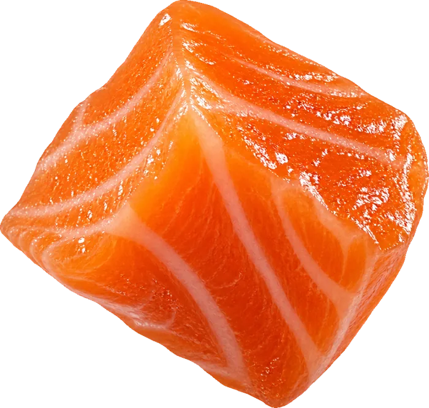
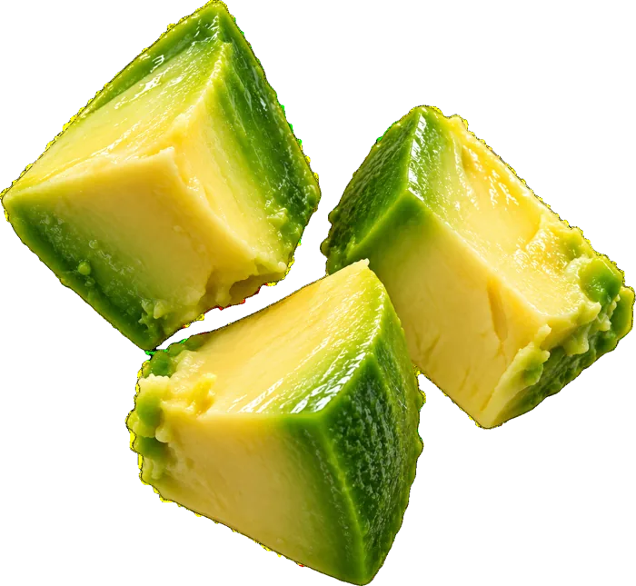
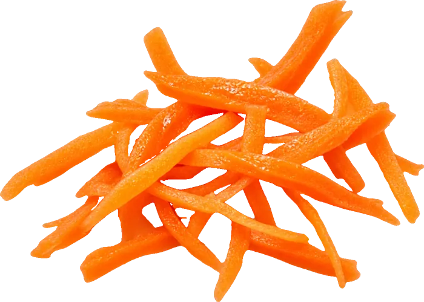
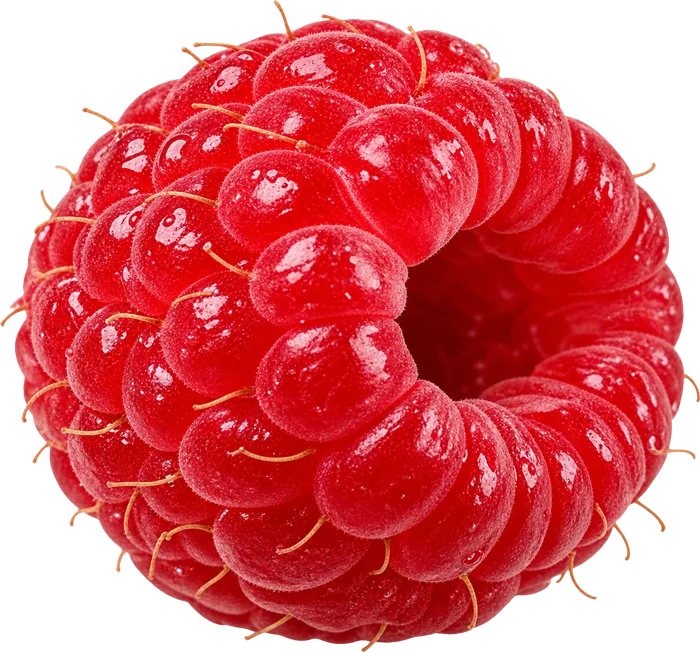
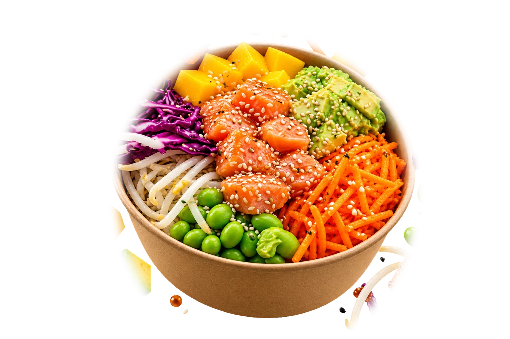

4 
Oups, ce bowl n'existe pas
La page que tu cherches a dû partir avec le food truck. Reviens à l'accueil ou viens directement nous voir !




4 
La page que tu cherches a dû partir avec le food truck. Reviens à l'accueil ou viens directement nous voir !